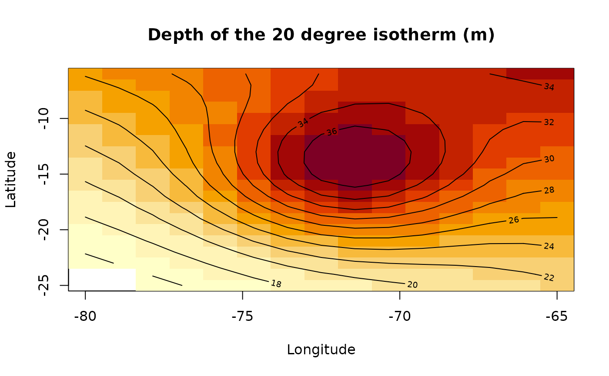

Locate the depth where a variable reaches a given value
Source:R/nctools-transform_internal.R
nc_loc.RdFinds the position along one dimension of a netCDF variable where the
variable reaches a target value, and writes the result to a new netCDF file.
In the typical use case, this is used to estimate the depth at which a
variable equals loc, using linear interpolation between adjacent depth
levels when needed.
Usage
nc_loc(
filename,
varid,
MARGIN,
loc,
output = NULL,
drop = TRUE,
newdim = NULL,
name = NULL,
longname = NULL,
units = NULL,
compression = NA,
verbose = FALSE,
force_v4 = TRUE,
ignore.case = FALSE
)Arguments
- filename
Character string. Path to the input netCDF file.
- varid
Character string. Name of the variable to analyse. If missing and the file contains only one variable, that variable is used.
- MARGIN
Integer or character string of length one. Dimension along which the target value is searched. This can be either the dimension index or its name (for example
"depth").- loc
Numeric. Target value to locate in the variable.
- output
Character string. Path to the output netCDF file to create.
- drop
Logical. Should degenerate dimensions be dropped? Currently not used internally.
- newdim
Reserved for future use. Currently not used internally.
- name
Character string. Name of the output variable. By default, the name of the searched dimension is used.
- longname
Character string. Long name for the output variable. By default, a descriptive name is generated automatically.
- units
Character string. Units for the output variable. Currently not used internally; by default, the units of the searched dimension are used.
- compression
Numeric. Compression level for the output variable. If not
NA, compression is applied and netCDF4 output is required.- verbose
Logical. Should extra information be printed? Currently not used internally.
- force_v4
Logical. Should the output file be forced to netCDF4? Currently not used internally.
- ignore.case
Logical. Ignore case when matching the dimension name in
MARGIN?
Details
The function searches for the first sign change in
variable - loc along the selected dimension, then estimates the exact
position by linear interpolation between the two surrounding grid points.
The output file contains a new variable with the searched dimension removed.
For example, if MARGIN corresponds to depth, the output is a field giving
the estimated depth at which varid reaches loc for each remaining
combination of dimensions.
Examples
local({
input = system.file("extdata",
"temperature_profile.nc",
package = "nctools",
mustWork = TRUE)
output = tempfile(fileext = ".nc")
on.exit(unlink(output))
# Locate the 20 degree isotherm using linear interpolation in depth
nc_loc(input, "temperature", MARGIN = "depth", loc = 20, output = output)
nc = ncdf4::nc_open(output)
result = tryCatch({
list(lon = ncdf4::ncvar_get(nc, "lon"),
lat = ncdf4::ncvar_get(nc, "lat"),
depth = ncdf4::ncvar_get(nc, "depth"))
}, finally = ncdf4::nc_close(nc))
# The input profiles follow T(z) = 8 + (surface - 8) * exp(-z / scale)
surface = outer(result$lon, result$lat, function(x, y)
24 + 3 * exp(-((x + 72)^2 / 16 + (y + 15)^2 / 36)) + (y + 25) / 19)
scale = outer(result$lon, result$lat, function(x, y)
50 + 25 * ((x + 80) / 15 + (y + 25) / 19))
analytical = scale * log((surface - 8) / (20 - 8))
analytical[1:2, 1:2] = NA_real_
# Interpolation on 10 m depth intervals approximates the exact solution
error = result$depth - analytical
print(range(error, na.rm = TRUE)) # signed interpolation error in metres
print(max(abs(error), na.rm = TRUE))
image(result$lon, result$lat, result$depth,
xlab = "Longitude", ylab = "Latitude",
main = "Depth of the 20 degree isotherm (m)")
contour(result$lon, result$lat, analytical, add = TRUE)
# Contours show the analytical depth; the missing corner remains blank
})
#> [1] 0.001400802 0.234022209
#> [1] 0.2340222
